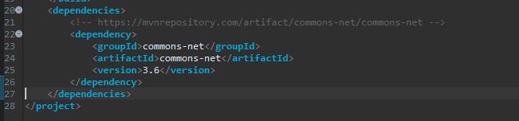

[Java] FTPに接続してファイルをダウンロード、アップロードする方法(FTPClient)
こんにちは。明月です。
この投稿はJavaでFTPに接続してファイルをダウンロード、アップロードする方法(FTPClient)に関する説明です。
以前に私がWindow環境でFTP Serverを構築する方法に関して説明したことがあります。
link - [CentOS] FTPインストールする方法(vsftpd)
link - [Window] WindowでFTPサーバを構築する方法
FTPClientプロトコールは以前ほどではないけれども、様々でファイル転送プロトコールとして使うところがあるので紹介します。
先、Java環境でFTPを使うようにはライブラリをダウンロードおよび参照しなければならないです。
repository - https://mvnrepository.com/artifact/commons-net/commons-net/3.6
<!-- https://mvnrepository.com/artifact/commons-net/commons-net -->
<dependency>
<groupId>commons-net</groupId>
<artifactId>commons-net</artifactId>
<version>3.6</version>
</dependency>

FTP Client環境を必ずウェブサービスで使うことだけではないのでConsoleで作成しましょう。
import java.io.File;
import java.io.FileInputStream;
import java.io.FileOutputStream;
import java.io.IOException;
import java.util.ArrayList;
import java.util.Collections;
import java.util.List;
import org.apache.commons.net.ftp.FTPClient;
import org.apache.commons.net.ftp.FTPFile;
import org.apache.commons.net.ftp.FTPReply;
public class Program {
// 開始関数
public static void main(String[] args) {
// FTPを接続するためにFTPClientクラスを割り当てする。
FTPClient client = new FTPClient();
try {
// connection環境でUTF-8のエンコードのタイプを使う。
client.setControlEncoding("UTF-8");
// ftp://localhostに接続する。
client.connect("localhost", 21);
// 接続を確認する。
int resultCode = client.getReplyCode();
// 接続時にエラーが発生すればコンソールにエラーメッセージを表示してプログラムを終了する。
if (!FTPReply.isPositiveCompletion(resultCode)) {
// コンソール出力
System.out.println("FTP server refused connection.!");
return;
} else {
// ファイル転送間の接続ディレイを設定する。(1ms単位なので1000なら1秒)
client.setSoTimeout(1000);
// ログインする。
if (!client.login("FTPUser", "password")) {
// ログインを失敗すればプログラムを終了する。
System.out.println("Login Error!");
return;
}
///************FTPのファイルをすべて削除***************
// ファイル情報のリスト変数
List<String> files = new ArrayList<>();
// ディレクトリ情報のリスト変数
List<String> directories = new ArrayList<>();
// FTPでファイルリストとディレクトリ情報を取得する。
if (getFileList(client, File.separator, files, directories)) {
// すべてファイルを削除する。
for (String file : files) {
client.deleteFile(file);
}
// getFileListで再帰的に関数を呼び出してディレクトリ構造を取得する。
// そのため、ルートディレクトリ情報がリストの前方に、派生ディレクトリが後方にある。
// ディレクトリ削除は派生ディレクトリから削除しなければならないのでリストをリバースする。
Collections.reverse(directories);
// ディレクトリ削除
for (String directory : directories) {
client.removeDirectory(directory);
}
} else {
// リスト取得失敗時、プログラム終了する。
System.out.println("File search Error!");
return;
}
///************アップロード***************
// ローカルディレクト設定
String root = "d:\\ftptest\\upload";
// リスト初期化
files.clear();
directories.clear();
// ローカルディレクトリファイルとディレクトリ情報を取得
getUploadList("d:\\ftptest\\upload", files, directories);
// FTPでディレクトをリ生成
for (String directory : directories) {
client.makeDirectory(directory);
}
// ファイルアップロード
for (String file : files) {
// ファイルInputStreamを取得する。
try (FileInputStream fi = new FileInputStream(file)) {
// FTPClientのstaoreFile関数を呼び出さればアップロードする。
if (client.storeFile(file.replace(root, ""), fi)) {
// コンソール出力
System.out.println("Upload - " + file);
}
}
}
///************ダウンロード***************
// リスト初期化
files.clear();
directories.clear();
// Ftpからダウンロードして格納するパスを設定
root = "d:\\ftptest\\download";
// FTPでファイルリストとディレクトリ情報を取得する。
if (getFileList(client, File.separator, files, directories)) {
// FTPのディレクトリ構造とおりにディレクトリ生成
for (String directory : directories) {
File file = new File(root + directory);
file.mkdir();
}
for (String file : files) {
// ファイルのOutputStreamを取得する。
try (FileOutputStream fo = new FileOutputStream(root + File.separator + file)) {
// FTPClientのretrieveFile関数を呼び出さればダウンロードする。
if (client.retrieveFile(file, fo)) {
// コンソール出力
System.out.println("Download - " + file);
}
}
}
} else {
// リスト取得失敗時にプログラムを終了する。
System.out.println("File search Error!");
return;
}
// ftpをログアウトする。
client.logout();
}
} catch (Throwable e) {
e.printStackTrace();
} finally {
// ftpコネクションを終了する。
try {
if (client.isConnected()) {
client.disconnect();
}
} catch (Throwable e) {
e.printStackTrace();
}
}
}
// ローカルのファイルリストとディレクトリ情報を取得する関数。
private static void getUploadList(String root, List<String> files, List<String> directories) {
File upload = new File(root);
// rootのパスのファイルリストを取得する。
for (File file : upload.listFiles()) {
// リストオブジェクトがファイルなら
if (file.isFile()) {
// filesリストにパスを追加する。
files.add(file.getAbsolutePath());
} else {
// ディレクトリなら関数の再帰的の方法でディレクトリ探索を開始する。
getUploadList(file.getAbsolutePath(), files, directories);
// directoriesリストにディレクトリパスを追加する。
directories.add(file.getAbsolutePath().replace(root, ""));
}
}
}
// FTPのファイルリストとディレクトリ情報を取得する関数。
private static boolean getFileList(FTPClient client, String cw, List<String> files, List<String> directories)
throws IOException {
// FTPのディレクトリカーソルを移動する。
if (client.changeWorkingDirectory(cw)) {
// 当該なディフォルトのファイルリストを取得する。
for (FTPFile file : client.listFiles()) {
// リストオブジェクトがファイルなら
if (file.isFile()) {
// filesリストにパスを追加する。
files.add(cw + file.getName());
} else {
// ディレクトリなら関数の再帰的の方法でディレクトリ探索を開始する。
if (!getFileList(client, cw + file.getName() + File.separator, files, directories)) {
return false;
} else {
// directoriesリストにディレクトリパスを追加する。
directories.add(cw + file.getName() + File.separator);
}
}
}
// これはFTPのディレクトリカーソルを上位に移動する関数(ここでは使わないが、よく使う関数だ。)
// client.changeToParentDirectory();
// FTPのディレクトリカーソルを移動する。
return client.changeWorkingDirectory(File.separator);
}
// カーソル移動が失敗すればfalseをリターンする。
return false;
}
}
上のソースはProgramのmain関数でFTP環境のファイルとディレクトリをすべて削除して「ftptest/upload」のディレクトリのファイルと派生ディレクトリ、ファイルをすべてアップロードして、「ftptest/download」にすべてダウンロードすることです。
上のファイルを「ftp://localhost(ftptest/ftp)」にアップロードするでしょう。
そしてまた上のファイルを(ftptest/download)にダウンロードするでしょう。

そうすればプログラムを実行しましょう。
「ftp://localhost(ftptest/ftp)」にアップロードされたか確認しましょう。

FTPサーバにちゃんとアップロードされました。
ちゃんとダウンロードもされました。
簡単なソースなので一つのファイルですべての例を作成しました。
よく使うAPIはlistFilesの関数のFTPファイルリスト取得することとchangeWorkingDirectory関数のディレクトリカーソル移動です。
カーソル移動に関して現在のカーソル位置に関して教える関数は無いです。FTPClientではなく変数を利用してカーソル移動を管理しなければならないです。
上でアップロードする時、storeFileを使いましたが、既存のFTPに同じ名のファイルが存在すれば上書きします。でもFTPには既存ファイルでバイナリ追加するappendFile関数もあります。
appendFileの場合は同じ名のファイルが無ければファイルを追加します。同じ名のファイルがあれば、バイナリを追加して作成します。テキストなら問題ないけど、その以外はファイルが可笑しくなるでしょう。
link - https://commons.apache.org/proper/commons-net/apidocs/org/apache/commons/net/ftp/FTPClient.html
ここまでJavaでFTPに接続してファイルをダウンロード、アップロードする方法(FTPClient)に関する説明でした。
ご不明なところや間違いところがあればコメントしてください。
- [Java] WebSocketでチャット履歴をローディングする方法2021/06/15 18:34:45
- [Java] WebSocketを利用してユーザ(サイト運用者)が他のユーザとチャットする方法2021/06/15 17:20:08
- [Java] HttpConnectionを利用してウェブページを取得する方法2020/05/20 23:53:24
- [Java] Jsoupを利用してXMLファイル(HTML)を扱う方法2020/05/19 19:32:21
- [Java] 日付フォーマット(SimpleDateFormat)を使う方法2020/03/25 00:36:53
- [Java] サーブレット(Servlet)の環境でファイルアップロード(プログレスバーでファイルアップロード状態を表示する方法)する方法2020/03/24 00:48:21
- [Java] Spring環境でファイルアップロード(プログレスバーでファイルアップロード状態を表示する方法)する方法2020/03/22 23:15:12
- [Java] FTPに接続してファイルをダウンロード、アップロードする方法(FTPClient)2020/03/20 02:44:36
- [Java] JSPのSpring環境でschedulerのcronを使う方法2020/03/18 00:24:32
- [Java] POIを利用してExcelを扱う方法2020/03/17 01:48:00
- [Java] PDFを出力する方法(itextpdf)2020/03/13 00:47:31
- [Java] ログライブラリ(log4j)を使う方法2020/03/12 00:54:39
- [Java] Jsonタイプのデータを使う方法(Gsonライブラリ)2020/03/11 00:30:15
- [Java] Base64をエンコード、デコードする方法2020/03/09 10:24:01
- [Java] cmdコマンドを実行するための方法2020/03/06 18:01:10
- [Java] 53. ウェブサービス(Web service)でエラーページを処理する方法2021/06/25 13:35:54
- [Design pattern] 1-3. ファクトリメソッドパターン(Factory method pattern)2021/06/23 19:45:37
- [Java] WebSocketでチャット履歴をローディングする方法2021/06/15 18:34:45
- [Java] WebSocketを利用してユーザ(サイト運用者)が他のユーザとチャットする方法2021/06/15 17:20:08
- [Design pattern] 1-2. ビルダーパターン(Builder pattern)2021/06/11 19:06:28
- [Design pattern] 1-1. シングルトンパターン(Singleton pattern)2021/06/09 19:40:05
- [Design Pattern] デザインパターンの紹介2021/06/08 20:42:36
- [Tools] Dbeaver(無料Sql queryブラウザツール)2021/04/28 18:26:49
- [Bootstrap] HTMLデザインのフレームワークのBootstrap紹介2020/07/30 19:06:36
- [Python] メール(smtplib)を送信する方法2020/07/27 18:38:43
- [Python] HttpConnection(requestsモジュール)でウェブサーバーで接続する方法2020/07/20 14:41:51
- [Python] Excel(openpyxl)を扱う方法2020/07/16 16:40:31
- [Python] ファイル圧縮、解凍(zipfile)する方法2020/07/14 19:14:22
- [Python] Apache cgiでPythonを使う方法2020/07/09 19:58:19
- [Python] Web serverを起動する方法(http.server)2020/07/09 00:13:13